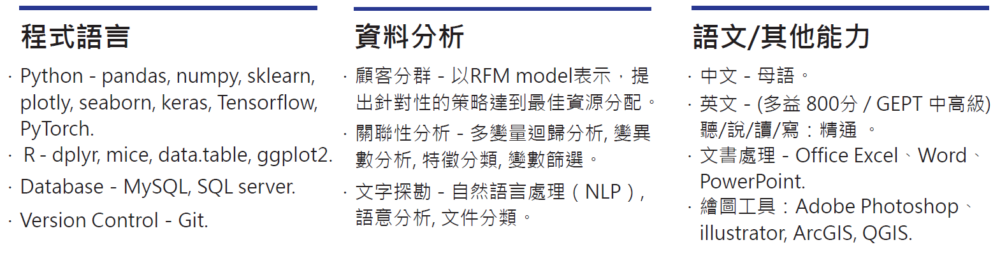

About Me

簡偉銘
我畢業於臺灣師範大學生命科學研究所，主要研究方向為巨量基因體資料關聯性分析，熱衷於挖掘資料數據中的價值，研究題目主要是探討物種的基因體序列資料與歷史的氣象資料之間的關聯性分析（Association Analysis），再透過機器學習（Machine Learning）的方式預測物種可能分布的範圍，研究成果也投稿在國際頂尖期刊。 大學期間參與中研院研究計畫及系上產學合作計畫，藉此接觸到許多語言與資料分析工具並從中學習團隊合作與領導能力。
數據分析師、資料分析師、商業分析師 b02612048@g.ntu.edu.tw專業技能

工作經歷
兼任研究助理 國立臺灣師範大學，2017 年 8 月 - 2018 年 8 月
大四下因為統計分析能力受到教授賞識，主動邀約我加入遺傳演化實驗室，協助教授投稿至領域排名前25%的科學期刊。 詳細工作項目如下：
- 主要負責資料前處理（Data Preprocessing）與統計分析及後續的資料視覺化。
- 大量閱讀國外文獻提出完整的研究邏輯架構與資料分析流程，再與教授討論確定後撰寫成研究計劃。
- 操作並維護實驗室計畫相關的儀器與設備。
學經歷
國立臺灣師範大學 生命科學研究所 生態演化組 碩士，2018 年 9 月 - 2020 年 7 月
碩士畢業論文題目為"臺灣肖楠族群遺傳及表觀遺傳分歧與海拔梯度相關之適應性演化"，研究物種的基因體序列資料與歷史的氣象資料之間的關聯性分析（Association Analysis），探討多項氣候因子與基因之間的關聯性（Multiple Regression），再透過演化式運算（Evolutionary Computation）及隨機森林（Random Forest）預測物種可能分布的範圍。
-
專心於學術研究與論文撰寫，爭取國內外論文發表經驗。
- 2019 NTU & NTNU Joint Symposium for Ecology and Evolutionary Biology-- Wei-Ming Chien and Shih-Ying Hwang "Local adaptation of Calocedrus formosana based on genetic and epigenetic variation"
-
2019 年選修資工所課程開始接觸自然語言處理（NLP）等相關課程，準確率達82%以上，獲得老師及學生互評92分。
- 擔任實驗室「統計分析」與「R程式語言與生態分析」課程助教，協助老師回答學生課堂上統計知識與資料分析問題。
國立臺灣大學 昆蟲學系 學士，2014 年 9 月 - 2018 年 7 月
-
參與中研院研究計畫，學習與來自不同領域的團隊合作及領導規劃能力，並運用生物相關專業知識及統計分析能力協助團隊研究進行。
- 2016 － 協助生物多樣性研究中心整理臺灣蝶蛾的資料及建置線上圖鑑資料庫（台灣產蝶蛾圖鑑）。
- 2017 － 參與研究昆蟲色彩與海拔的關聯性，負責特徵辨識與統計分析，並與資訊所合作運用AI預測稀有物種的分布範圍。
-
積極參與系上事務與產學合作計畫，學習規劃大型活動及專案管理能力。